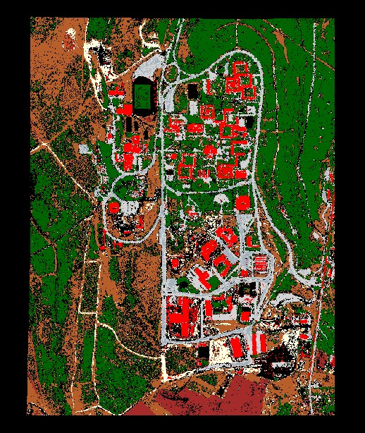
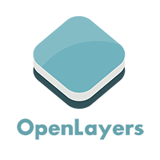

Campus Map (OpenLayers)
An OSM-based campus map featuring layer control and an initial zoom view of Hacettepe University.
Geomatics Engineering student at Hacettepe University
Some of the selected projects I have worked on. Each card includes a short description, tags, and links.
An OSM-based campus map featuring layer control and an initial zoom view of Hacettepe University.
A simple static website for lecture summaries and small visualizations.
A set of small JavaScript utilities for coordinate conversion, distance, and azimuth calculations.
| Technology | Logo | Usage in Projects | Level |
|---|---|---|---|
| OpenLayers | OL | Used for base maps, zoom, and layer controls | Intermediate |
| HTML | Created the main structure of static pages | Advanced | |
| CSS | Handled responsive layout and animations (slideUp/slideDown) | Intermediate | |
| JavaScript | Implemented OpenLayers initialization and minor interactive tools | Intermediate | |
| Python | Used for simple data preprocessing and analysis | Intermediate | |
| QGIS | Edited vector and raster data before visualization | Basic |
Note: Place small 28×28 PNG logos in the /icons/ folder (e.g. icons/html.png).